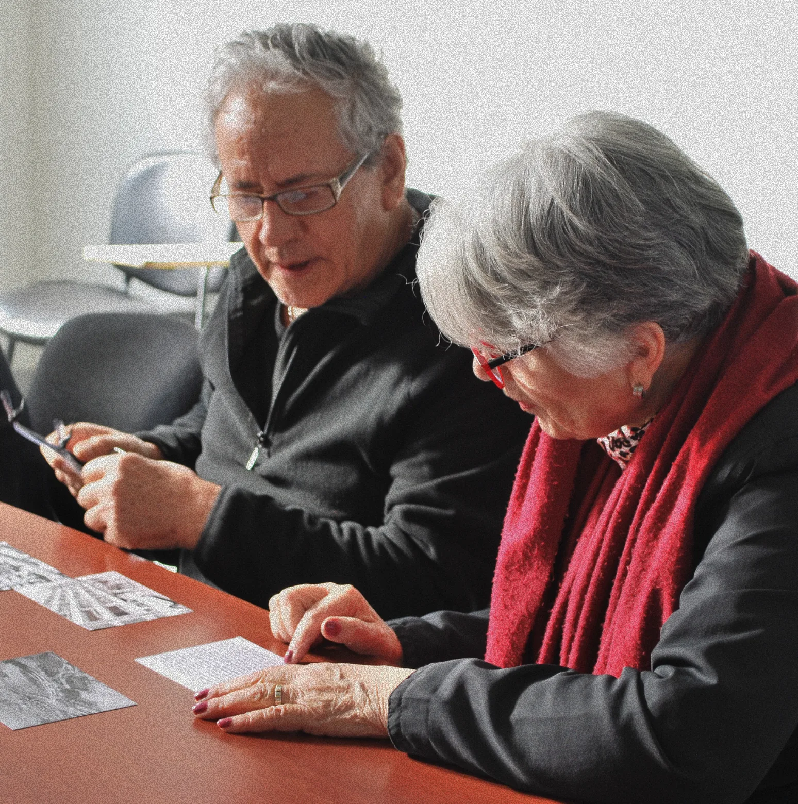
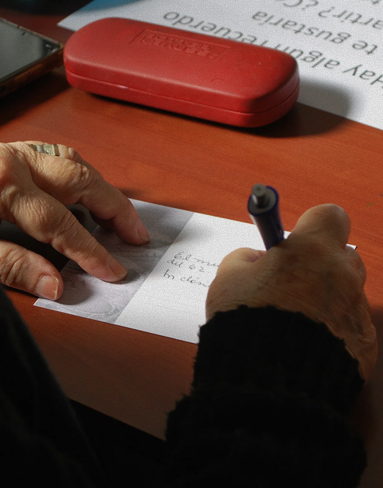
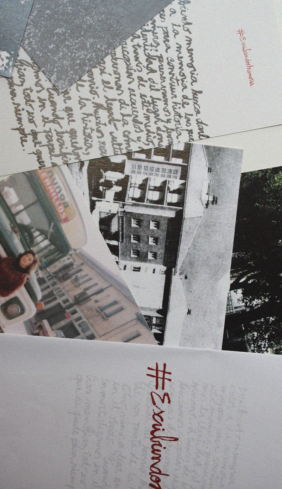

Escribiendo Memoria
Older residents' memories as a living archive of the district.
( Year )
2023
( Context )
Taller IV, Diseño UC
( Partner )
Municipality of Ñuñoa · CEDIAM
( Team )
4 designers
( My role )
Horizontal teamwork across every stage of the project
( 06.2 Challenge and proposal )
Listening as a design tool
A neighbourhood's official history rarely includes the personal and emotional side. At CEDIAM, Ñuñoa's day centre for older adults, we designed participatory sessions combining conversation, photography and writing to capture residents' stories and build the district's collective memory with them.



( Research )
20 to 30 older adults attending CEDIAM workshops, together with its psychologists and occupational therapists
( Reflection )
Listening was the design. The best sessions were the ones where we spoke the least.